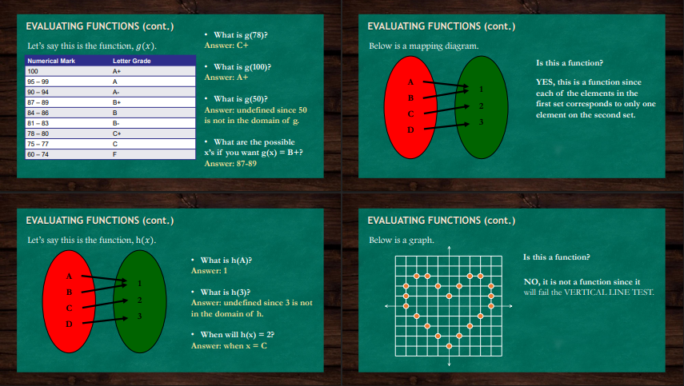
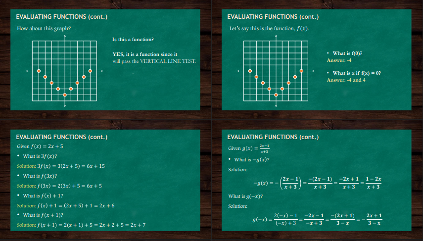

This image provides examples of evaluating a function, m(x) = √(2x - 1), in two different ways. First, it shows how to find [m(x)]², which involves squaring the entire function, resulting in (√(2x - 1))² = 2x - 1. Second, it demonstrates how to find m(x²), which involves substituting x² into the function, resulting in m(x²) = √(2(x²) - 1) = √(2x² - 1). These examples illustrate the difference between squaring the function's output versus substituting a squared variable into the function.
This image contains examples of evaluating functions from graphs and algebraic expressions. One graph is identified as a function because it passes the vertical line test. For this graph, it is shown that f(0) = -4, and f(x) = 0 when x = -4 and 4. The image also demonstrates evaluating the function f(x) = 2x + 5 for 3f(x), f(3x), f(x) + 1, and f(x + 1). Additionally, it shows the function g(x) = (2x-1)/(x+3) and how to find -g(x) and g(-x).
This image shows several examples of evaluating functions and determining if a relation is a function. It includes a function g(x) defined by a numerical mark to letter grade conversion, and asks to find g(78), g(100), g(50), and the x values for which g(x) = B+. It also shows two mapping diagrams, one that represents a function because each element in the first set corresponds to only one element in the second set, and another example of h(x). Lastly, it shows a graph that is not a function because it fails the vertical line test.

The image describes functional notation, explaining that functions are given names for easy reference, often using letters of the alphabet. It clarifies that f(x) does not mean "f multiplied by x," but rather "f of x," representing the function value that assigns to x, equating to y. The domain is the set of all possible x values, while the range is the set of all possible y or f(x) values. Additionally, it illustrates evaluating functions using the example f(x) = 3x - 1, demonstrating how to solve for f(-2) by multiplying -2 by 3 and then subtracting 1, resulting in -7, thus forming the ordered pair (-2, -7). Lastly, it presents a relation of numerical marks and letter grades, confirming it as a many-to-one function because each numerical mark corresponds to only one letter grade.